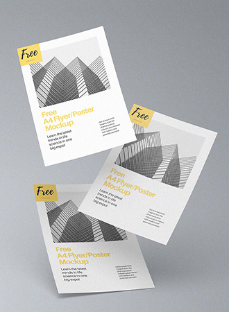

본문영역
about moorim
-
사업장소개
도전과 혁신, 협력과프로정신을
가진 새로운 인재를 찾습니다. -

R&D
종이의 꿈을 실현하는첨단
기술의 R&D 연구 개발입니다. -
회사소개
지구의 환경을 먼저 생각하고
보호하는 친환경기업입니다.
생활에 가치를 더하는 펄프, 제지기술
펄프의 가능성, 무림이 만드는 제지의 새로운 미래!
sustainable
product
-
- 인쇄용지 PRINTING & WRITING PAPER
- 코팅유무에 따라 도공지와 비도공지로 구분되며, 주로 인쇄 및 필기에 사용되는 용지입니다. 대량인쇄에 적합하여 주로 서적, 교과서, 다이어리, 간행물, 카탈로그, 캘린더 등 출판 및 전단 분야에 사용됩니다.
- #밀크시리즈
- #백상지
- #코트지
 -
- 산업용지 SPECIALTY PAPER
- 종이에 특수한 기능을 갖추어 여러 산업군에서 사용되는 종이입니다. 산소 및 수분을 차단하는 종이 포장재 프로테고, 섬유 원단에 간접 인쇄하는 전사지, 연소가 잘 되지 않아 안전한 난연벽지, 라벨 스티커에 사용되는 글라신지, 박리지 등이 있습니다.
- #백판지
- #All-pulp
- #특수지
- #감열지
-
- 인스퍼 SPECIALTY PAPER
- ‘inspiring’ 과 ‘paper’의 합성어로, 디자이너 곁에서 영감을 주는 종이가 되겠다는 의미를 담고 있습니다. 러프그로스지, 색지, 무늬지, 펄지, 티끌지 등 다양한 색상과 패턴으로 구성된 개성있는 팬시지입니다.
- #러프그로스지
- #색지
- #무늬지
news
국내 최고의 펄프·제지 기술로
생활 에 가치 를 더하다
무림이 만드는 건강한 내일입니다.